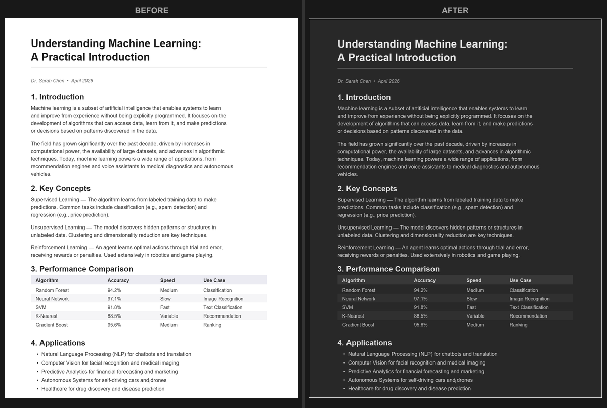

Windows上的PDF深色模式：告别刺眼阅读
Windows 10和11都有系统级深色模式，但它不会改变PDF文件的内容。当你在Edge、Chrome或Adobe Acrobat中打开PDF时，页面仍然显示原始的亮白色背景。如果你经常阅读PDF，尤其是在夜间，以下是获得真正深色模式的方法。
简单方法：在浏览器中转换
在Windows的任意浏览器中打开PDF Dark Mode Converter。将PDF拖放到页面上，选择主题，转换后的深色模式PDF将自动下载。无需安装软件，无需创建账户。
该工具提供16+主题（Dracula、Nord、Solarized、Tokyo Night等），以及自定义颜色选择器，可满足你对特定色调的需求。你还可以调整分辨率和输出质量。

Adobe Acrobat的深色模式呢？
Adobe Acrobat Reader有一个'深色模式'显示选项，但它只改变应用界面（菜单、工具栏、侧边栏）。PDF页面本身仍然是白色的。还有一个辅助功能选项可以覆盖页面颜色，但这只是临时的显示更改。如果你分享文件或在其他地方打开它，会恢复原始颜色。
如果你需要永久、可移植的深色背景，转换PDF才是正确的选择。
Microsoft Edge呢？
Edge有一个'Force Dark Mode for Web Contents'标志（类似于Chrome），但在Edge内置查看器中打开PDF时效果不可靠。某些页面可能部分变暗，而其他页面保持不变。这不是一个一致的PDF阅读解决方案。
Chrome和Firefox的PDF查看器也有类似的局限性。请查看我们的Chrome深色模式、Firefox深色模式或Edge专属选项指南了解更多详情。
为什么在Windows上转换效果更好
- 转换生成标准PDF，可在任何应用中打开（Edge、Chrome、Acrobat、SumatraPDF、Foxit等）。
- 深色配色是永久的。无需保持特定应用或扩展处于活动状态。
- 处理在浏览器本地完成，你的文档保持私密。
- GPU加速转换意味着即使是大型PDF也能在几秒钟内而非几分钟内处理完成。
开始使用：打开PDF Dark Mode Converter，选择主题，立即转换你的PDF。适用于Windows上的Chrome、Edge、Firefox或任何其他浏览器。
常见问题
不适用，Windows的系统级深色模式只改变应用程序的界面。PDF内容在所有阅读器中都保持原始颜色。
Adobe Acrobat Reader有一个高对比度的辅助功能模式，可以为屏幕显示更改页面颜色，但这种更改是临时的，不会保存到文件中。
可以。PDF Dark Mode Converter在Windows的任何浏览器中运行，无需安装。只需打开页面，拖入你的PDF，然后下载深色版本。